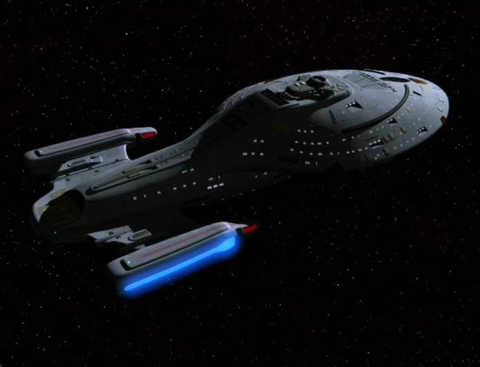
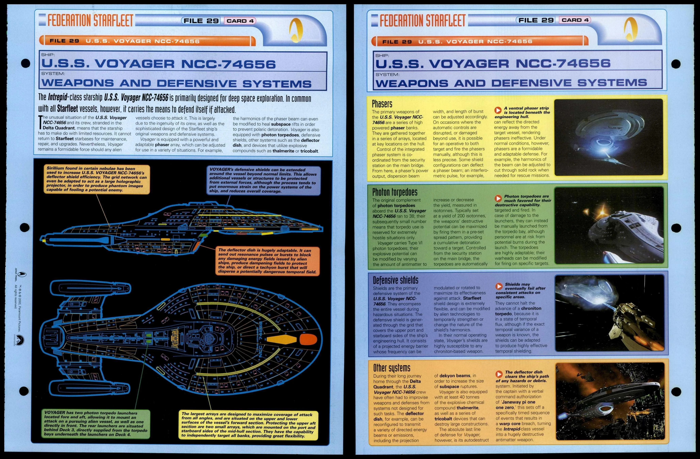
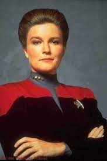
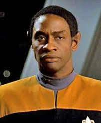
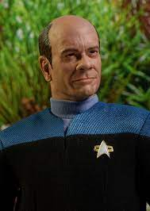
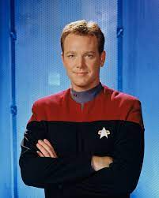
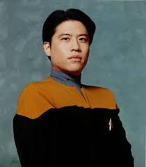
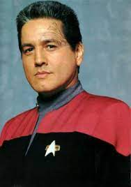

USS Voyager NCC-74656
The USS Voyager (NCC-74656) was a 24th century Federation Intrepid-class starship operated by Starfleet from 2371 to 2378. One of the most storied starships in the history of Starfleet, Voyager was famous for completing an unscheduled seven-year journey across the Delta Quadrant, the first successful exploration of that quadrant by the Federation, as well as numerous technological innovations and first contacts. It was the first ship in a long line to bear the name Voyager with this registry. For those that want to know more

Weaponry
Like many Federation starships of its time, Voyager was armed with:
- phasers
- type-6 photon torpedoes
- protected by a deflector shield system
- quantum torpedoes as well,
- spatial charges
- tricobalt devices

Crew
Picture |
Name |
Function |
More |
 |
Kathryn Janeway |
Captein |
More |
 |
Tuvok |
First officer |
More |
 |
B'Elanna Torres |
Chief engineer |
More |
 |
Doctor |
Chief medical officer |
More |
 |
Tom Paris |
Pilot |
More |
 |
Harry Kim |
Operations officer |
More |
 |
Chakotay |
Commanding officer |
More |
Seven of Nine,(former borg) |
First officer, USS Titan-A |
More |